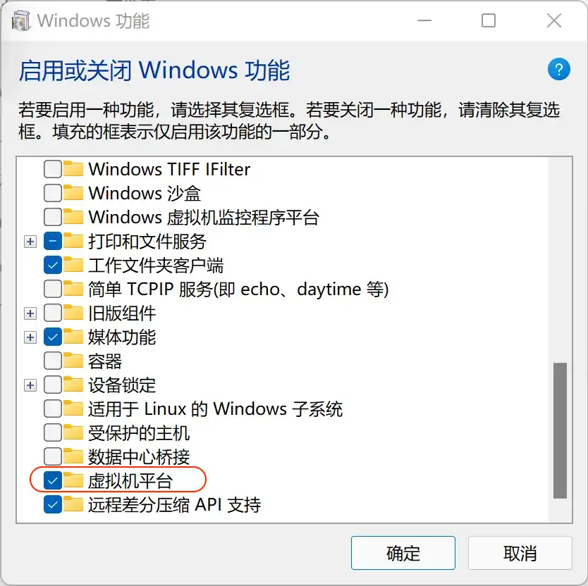
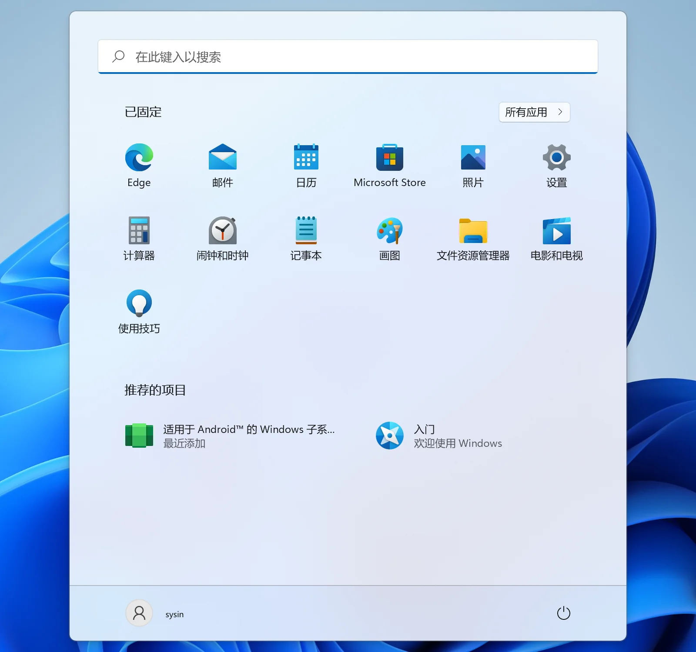
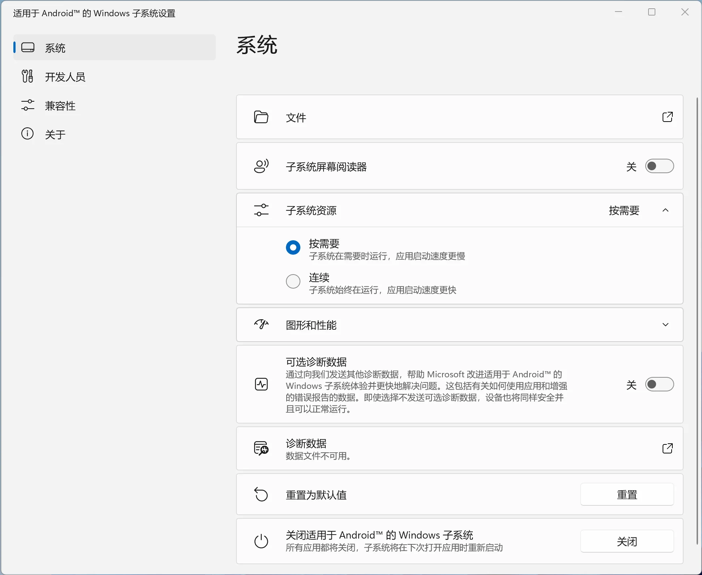
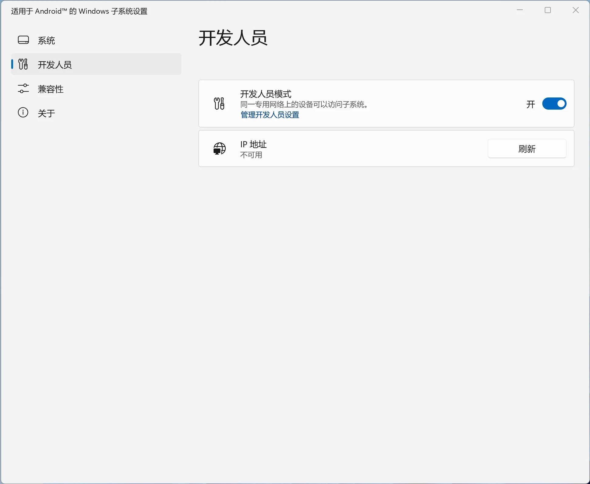
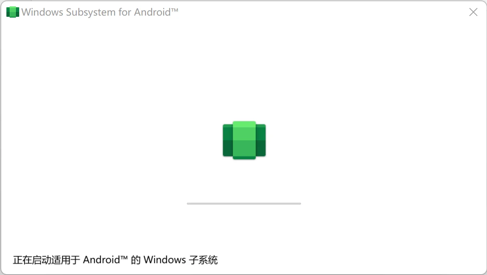
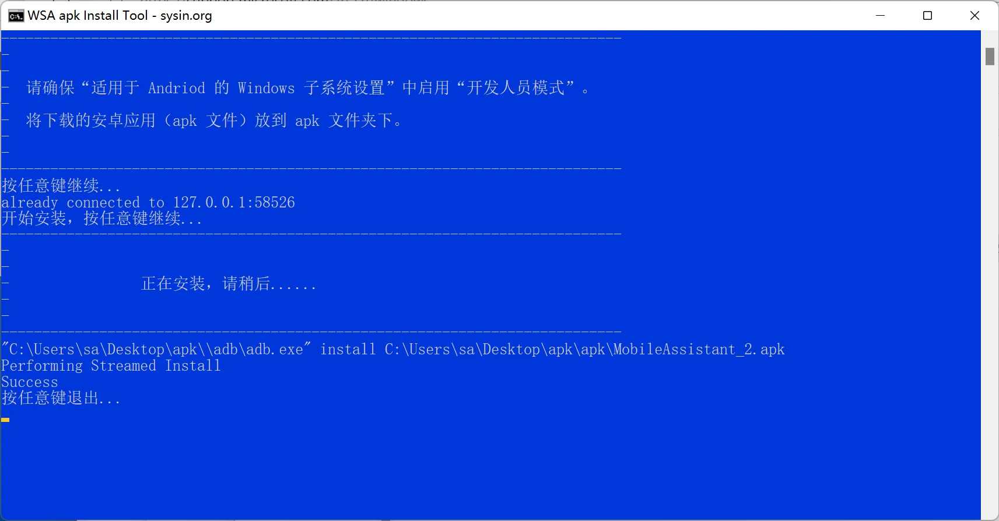
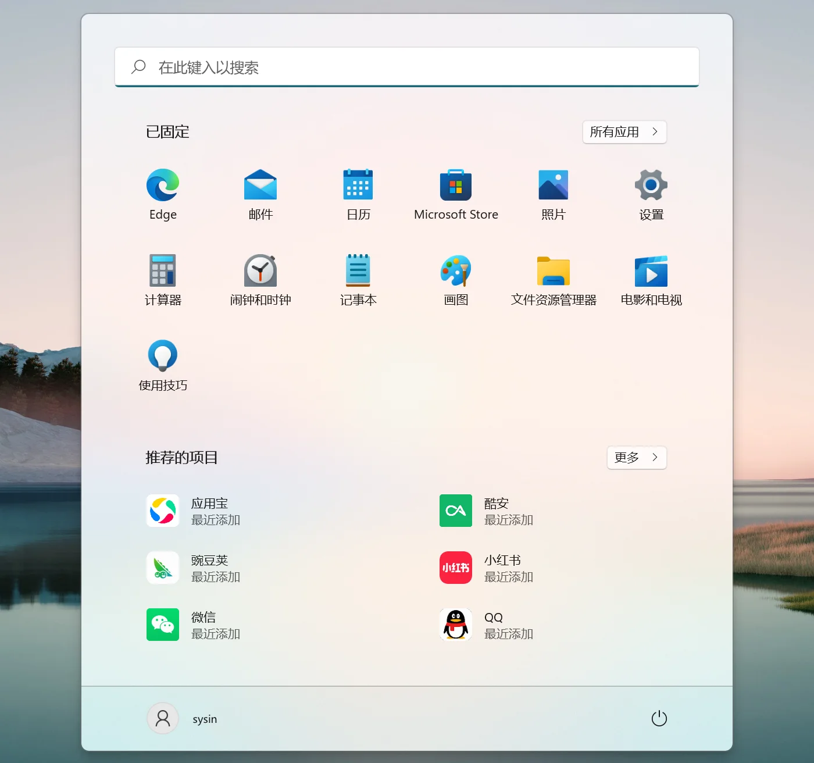

请访问原文链接：在 Windows 上运行 Andriod 应用：WSA 安装说明 查看最新版。原创作品，转载请保留出处。
作者主页：sysin.org
在 Windows 运行上 Andriod 应用：WSA 安装说明
下载：Windows Subsystem for Android (WSA) 下载：在 Windows 11 上运行 Android 应用 (updated Jan 2024)
鉴于 WSA 的官方安装方法的限制，比如需要美国区域，需要注册和登录账号，本文提供简单的离线安装方法。
WSA 是什么?
Windows Subsystem for Android™️ 简称 WSA，即适用于 Android™️ 的 Windows 子系统，可以使你的 Windows 11 设备能够运行 Amazon Appstore 中提供的 Android 应用程序。当然也可以运行任意应用商店和本地下载的 Android 应用程序，感官体验上与 Windows 应用程序一致。
下载 WSA
请访问：Windows Subsystem for Android (WSA) 下载：在 Windows 11 上运行 Android 应用 (updated Jan 2024)
WSA 系统要求
硬件：
- CPU：Intel Core i3 8th Gen (minimum) or above，AMD Ryzen 3000 (minimum) or above，Qualcomm Snapdragon 8c (minimum) or above
- 内存：8 GB 最低（不够用），建议 16 GB 及以上
- 磁盘：SSD，推荐 NVME SSD
- 可能需要为电脑的 BIOS/UEFI 启用虚拟化（现在一般默认启用）。单击此处 获取有关如何在您的 PC 上启用此功能的指南。
软件：
- 符合 Windows 11 系统要求 的电脑，直接 下载最新的 Windows 11 官方镜像安装。
- 不符合 Windows 11 TPM 和 UEFI 安全启动要求的电脑（旧 PC，Mac，虚机），请下载 NoTPM 镜像 安装 (sysin)。
- 虚拟机中安装需要启用嵌套虚拟化支持，例如在 VMware 虚拟化软件中的处理器高级选项 “为虚拟机启用 Hypervisor”。
- 下载 WSA 离线安装包及工具：https://sysin.org/blog/wsa/
自动安装 WSA
该方式适合国外用户，国内用户请忽略，直接使用手动安装方式。
限制：
-
电脑的区域必须设置为美国（设置 - 时间和语言 - 语言和区域 - 区域）。Windows 上的 Amazon Appstore 目前仅在美国提供。
-
您的 PC 必须在 Beta 频道中 (sysin)。如果您不 Windows 预览体验计划，请单击此处 开始注册并将您的 PC 加入 Beta 频道。
-
您还需要拥有一个美国亚马逊账户才能使用亚马逊应用商店。
之后，只需单击此处 转到 Microsoft Store，它将引导您完成验证您的设备是否满足最低系统要求、设置环境并立即发现新的 Android 应用和游戏的步骤。
当执行以下两个用户操作中的任意一个时，Microsoft Store 将在后台无提示地自动安装适用于 Android 的 Windows 子系统：
- 从 Microsoft Store 安装 Amazon Appstore。选择 “获取” 将开始安装应用。
- 首次从 Microsoft Store 安装 Android 应用，这也将安装 Amazon Appstore。
手动安装 WSA
本例将上述下载的 wsa 安装文件保存在 C:\wsa 目录下，请根据实际路径切换即可。
本例中的步骤适用于 x86 PC，鉴于 ARM PC 极为罕见，暂未提供部分 arm64 的依赖包，可自行搜索，方法相同。
-
以管理员身份打开 Windows 终端
右键点击开始菜单图标，选择 “Windows 终端（管理员）”
Windows 终端默认使用 PowerShell，或者以管理员身份打开 PowerShell。
-
安装组件：在 Windows 终端中执行如下命令
Enable-WindowsOptionalFeature -Online -FeatureName "VirtualMachinePlatform" -All安装完成提示是否重启，这里选择 N，稍后重启。
1
2
3
4
5
6
7PS C:\Users\sa> Enable-WindowsOptionalFeature -Online -FeatureName "VirtualMachinePlatform" -All
是否立即重启计算机以完成此操作?
[Y] Yes [N] No [?] 帮助 (默认值为 “Y”): n
Path :
Online : True
RestartNeeded : True可选组件：
1
2# 以下两个组件非必须
Enable-WindowsOptionalFeature -Online -FeatureName "HypervisorPlatform;Containers-DisposableClientVM" -All1
2
3
4
5# 替代的 dism 命令：
dism /online /Enable-Feature /FeatureName:VirtualMachinePlatform #虚拟机平台
# 非必要组件
dism /online /Enable-Feature /FeatureName:HypervisorPlatform #Windows 虚拟机监控程序平台
dism /online /Enable-Feature /FeatureName:Containers-DisposableClientVM #Windows 沙盒图形界面替代操作步骤：
点击开始菜单搜索并打开 “启用或关闭 Windows 功能”，勾选 “虚拟机平台” 点击 “确定” 即可，如图：

提示重启，暂时不要重启。
⚠️ 有消息称版本 2208.40000.4.0 需要勾选 Hyper-V（Hyper-V 服务及虚拟机监控程序）（未验证，截图未更新）。
或者对应执行如下命令：
Enable-WindowsOptionalFeature -Online -FeatureName "Microsoft-Hyper-V" -All或者
dism /online /Enable-Feature /all /FeatureName:Microsoft-Hyper-V -
安装 WSA 离线包
在 Windows 终端中执行命令
Add-AppPackage -Path 软件包名称安装1
2
3
4
5
6
7
8
9
10# 本例下载的文件保存在 c:\wsa
cd c:\wsa
# 命令使用 Tab 键自动补全
# 以下两个软件包因系统差异可能非必须
PS C:\wsa> Add-AppPackage -Path .\Microsoft.UI.Xaml.2.6_2.62112.3002.0_x64__8wekyb3d8bbwe.Appx
# 下面这个包测试在 Build 22000.376 中无需安装，反而在更新的 Build 22000.556 中报错需要手动安装
# 若无提示请忽略下一条命令
PS C:\wsa> Add-AppPackage -Path .\Microsoft.VCLibs.140.00.UWPDesktop_14.0.30704.0_x64__8wekyb3d8bbwe.Appx
# 安装 WSA 离线包
PS C:\wsa> Add-AppPackage -Path .\MicrosoftCorporationII.WindowsSubsystemForAndroid_2204.40000.15.0_neutral___8wekyb3d8bbwe.Msixbundle如果你已经安装旧版的 WSA，请转到 “适用于 Andriod 的 Windows 子系统设置” 中 “关闭适用于 Andriod 的 Windows 子系统”，即可更新为新版。
-
重启电脑
安装完成需要重启才能生效。
-
开启 “开发人员模式”
点击开始菜单，点击 “适用于 Andriod 的 Windows 子系统设置”

“子系统资源” 可以根据需要勾选 “连续”，可以保持 WSA 始终运行，如图：

打开 “开发人员模式”，如图：

此时点击 “管理开发人员模式设置”，即可启动 WSA。

安装应用商店和应用
因自带的 Amazon Appstore 限制，我们需要手动安装一个第三方应用商店，比如豌豆荚、酷安、腾讯应用宝等等，然后在应用商店中安装应用。
当然也可以直接安装应用（下载 apk 文件），不需要安装应用商店。
方法一：原始安装方法。
下载 Android Debugging Bridge (ADB) tools，然后下载应用商店，当然也可以是某个应用（比如淘宝、微信）的 apk 文件。
打开 Windows 终端进行安装：
1 | adb connect 127.0.0.1:58526 |
方法二：使用脚本自动安装。
为了方便安装，笔者在 WSA 下载中提供了 apk_install 脚本 (sysin)。
将需要安装的 apk 文件放到 apk 文件下面（示例中为 “酷安、豌豆荚和应用宝”）。
直接双击 apk_install.cmd 即可自动安装。

现在点击 Windows 开始菜单即可看到安装的应用（商店），然后就可以随意安装应用了。

方法三：第三方工具。
另外有 WSA toolbox 之类的软件，请自行搜索，原理一样的，界面会友好一些。
运行 Andriod 应用
直接开始菜单打开应用即可，与普通 Windows 应用看起来无差。
卸载 Andriod 应用
设置 - 应用 - 应用和功能，如同 Windows 程序一样卸载即可
如何卸载 WSA
设置 - 应用 - 应用和功能，卸载 Windows Subsystem for Andriod 即可，已经安装的 Adriod 应用将同时自动卸载。
然后在 “启用和关闭 Windows 功能”，取消勾选 “虚拟机平台”。

文章用于推荐和分享优秀的软件产品及其相关技术，所有软件默认提供官方原版（免费版或试用版），免费分享。对于部分产品笔者加入了自己的理解和分析，方便学习和研究使用。任何内容若侵犯了您的版权，请联系作者删除。如果您喜欢这篇文章或者觉得它对您有所帮助，或者发现有不当之处，欢迎您发表评论，也欢迎您分享这个网站，或者赞赏一下作者，谢谢！
 支付宝赞赏
支付宝赞赏
 微信赞赏
微信赞赏
赞赏一下